Шесть вариантов главной страницы с разными заголовками, подзаголовками, кнопками и композицией. Все тексты без неподтверждённых обещаний вроде «гарантируем полное соблюдение законодательства». Цвета — «Лес», шрифты — «Классика».
Подзаголовок: LawTracker следит за законодательством и присылает только то, что относится к вашему бизнесу — простыми словами, со сроками и ссылкой на первоисточник.
Кнопки: Начать · Как это работает
Идея: Сразу объясняет главное отличие от КонсультантПлюс и ГАРАНТ — персонализацию. Справа пример дайджеста показывает продукт.
Когда выбрать: Универсальный и безопасный первый экран. Рекомендуем как основной.
Минусы: Заголовок длинный; справа много текста в примере.
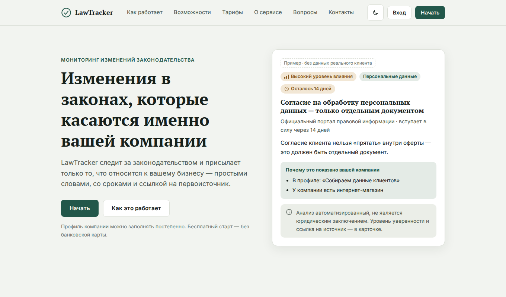
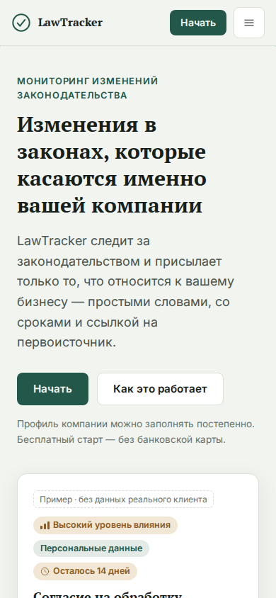
Подзаголовок: LawTracker отвечает на три вопроса, которые вы задаёте каждый раз, когда слышите о новом законе.
Кнопки: Начать · Как это работает
Идея: Повторяет ключевую логику ТЗ: «что изменилось — касается ли нас — что сделать». Тон разговорный, вовлекающий.
Когда выбрать: Хорош для владельцев бизнеса без юридической подготовки; сразу объясняет пользу через вопросы.
Минусы: Нет визуального примера продукта на первом экране.
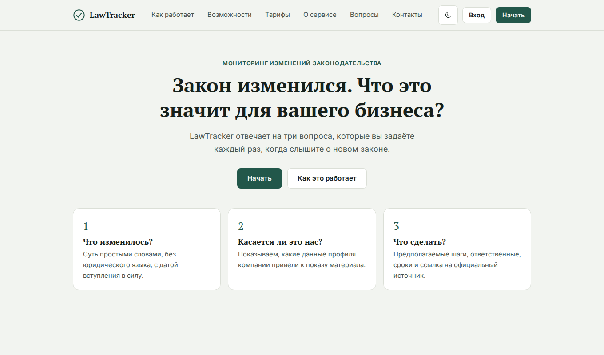
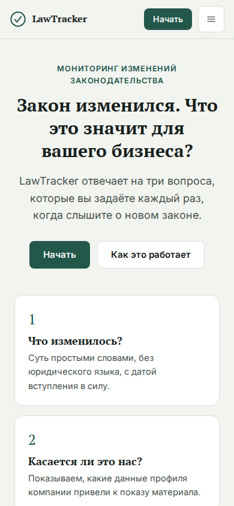
Подзаголовок: LawTracker превращает изменения законодательства в конкретные шаги для вашей компании: что сделать, кому поручить и к какому сроку.
Кнопки: Попробовать · Как это работает
Идея: Делает ставку на практическую пользу (сроки, ответственные, статусы) — то, чего нет у справочных систем.
Когда выбрать: Сильно для руководителей и юристов, которым важен результат, а не информация.
Минусы: Обещание «плана» шире текущего MVP: действия в продукте пока предполагаемые (в подписи указана оговорка).
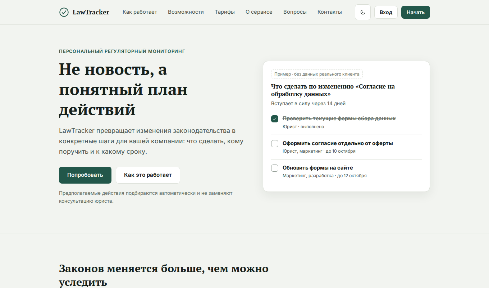
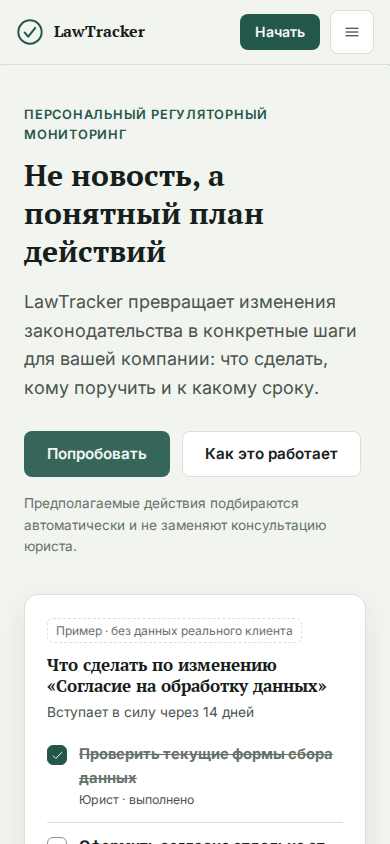
Подзаголовок: Мы отслеживаем изменения законодательства и присылаем только то, что касается вашей компании, — в личный кабинет и Telegram. Каждый канал отключается отдельно.
Кнопки: Начать · Как это работает
Идея: Показывает удобство: сообщения приходят туда, где пользователь и так находится. Эмоциональный заголовок.
Когда выбрать: Подходит малому бизнесу и ИП, которым важна лёгкость и отсутствие рутины.
Минусы: Акцент на канале доставки, а не на качестве анализа; нужно подчёркивать, что кабинет — основной.
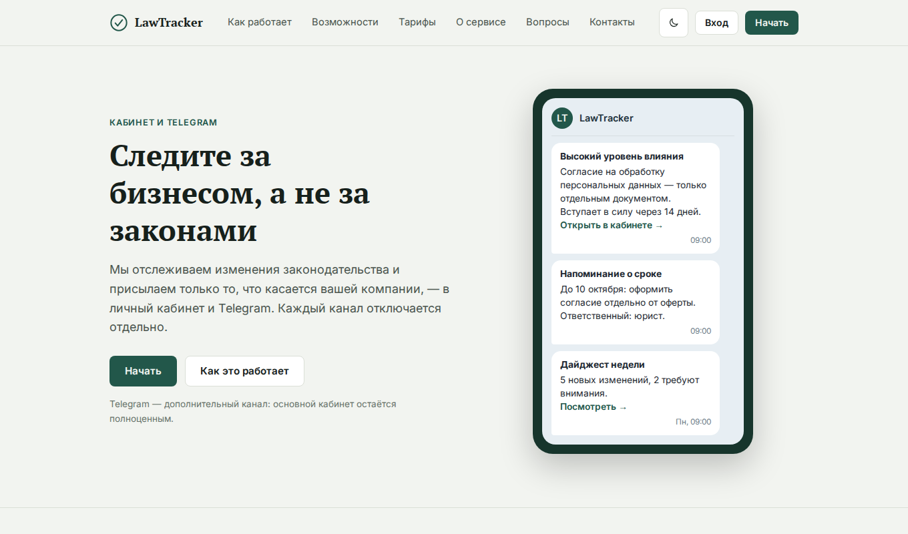
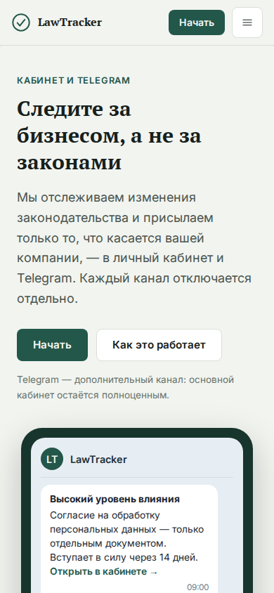
Подзаголовок: Оставьте почту — мы откроем доступ к персональным дайджестам, как только сервис запустится.
Кнопки: Запросить доступ (поле почты)
Идея: Короткая воронка без регистрации: собирает контакты, пока продукт в разработке (ТЗ допускает «Запросить доступ»).
Когда выбрать: Подходит для предзапуска и проверки спроса (месяц 1–3 плана из презентации).
Минусы: После запуска лучше заменить на «Начать». Нет примера продукта.
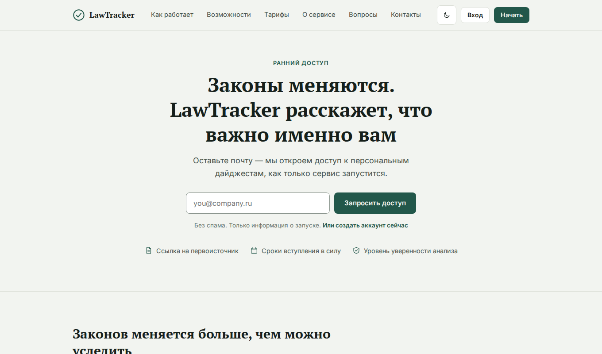
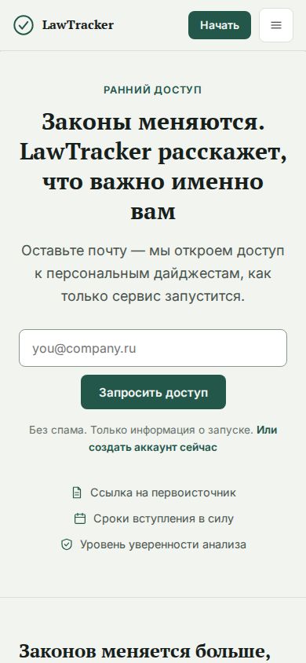
Подзаголовок: Руководителям, юристам, бухгалтерам и HR — свой взгляд на одно и то же изменение: коротко, по делу и со ссылкой на источник.
Кнопки: Начать · Как это работает (+ выбор роли)
Идея: Интерактивный: пользователь выбирает роль, и пример дайджеста меняется. Показывает, что сервис понятен не только юристам.
Когда выбрать: Подходит для широкой аудитории из ТЗ: руководители, юристы, бухгалтеры, HR.
Минусы: Сложнее в разработке и тексты ролей нужно согласовать с юристом.
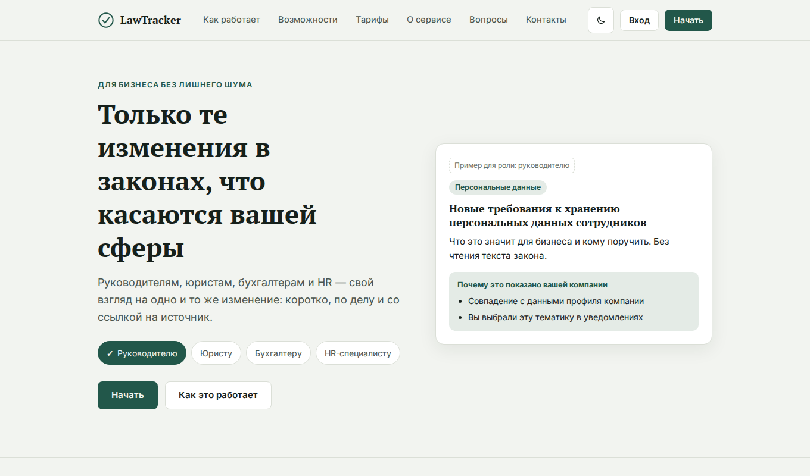
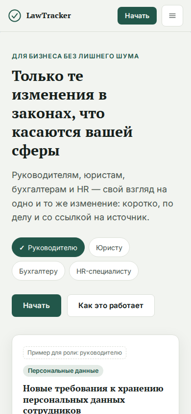